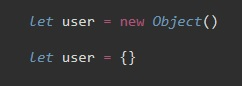
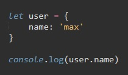
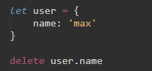
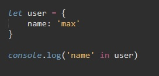
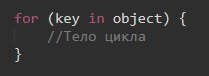
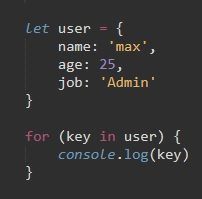
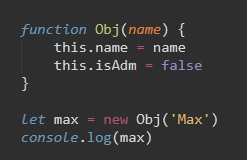
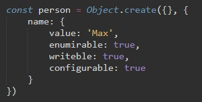
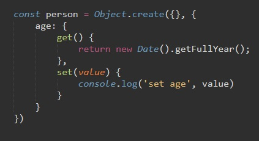
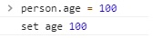

Для объявления объекта можно использовать два синтаксиса:
Второй способ называется Литерным. В этом случае мы сразу можем задать свойства для объекта
Для обращения к свойствам объекта, сначала вызывают объект, затем через точку указывают свойство
Для удаления свойства можно использовать опратор delete
Этот оператор существует для проверки есть ли в объекте свойство. Этот оператор возвращает true или false. Название ключа указывается в кавычках
Этот цикл используется для перебора всех свойств объекта
Синтаксис:
Пример
D функциях конструктора есть два правила:
Создадим функцию которая нам будет создавать объект
Пример
Метод create получает на вход два параметра, которые оба являются объектами. Первый параметр может содержать методы, которые будут наследовать прототипы объекта. Во втором мы указываем ключи объекта (свойства) и так же можем указать методы объекта.
В примере свойство которое мы задали нашему объекту person - это его имя (name). Это свойство так же является объектом и имеет следующие ключи:
Рассмотрим пример
Ключу (свойству) age мы задали методы get и set. Метод get возвращает какое либо значение. В то время когда метод set принимает како-либо значение (value)
Так при запросе в консоли person.age мы получим следующий результат:
Т.е. сработает метод get
Но если мы обратимся к person.age и зададим какой-нибудь параметр, то сработает метод set
В итоге, свойству объекта мы можем задать метод get - который будет что то возвращать, или метод get - который будет что то получать и обрабатывать это